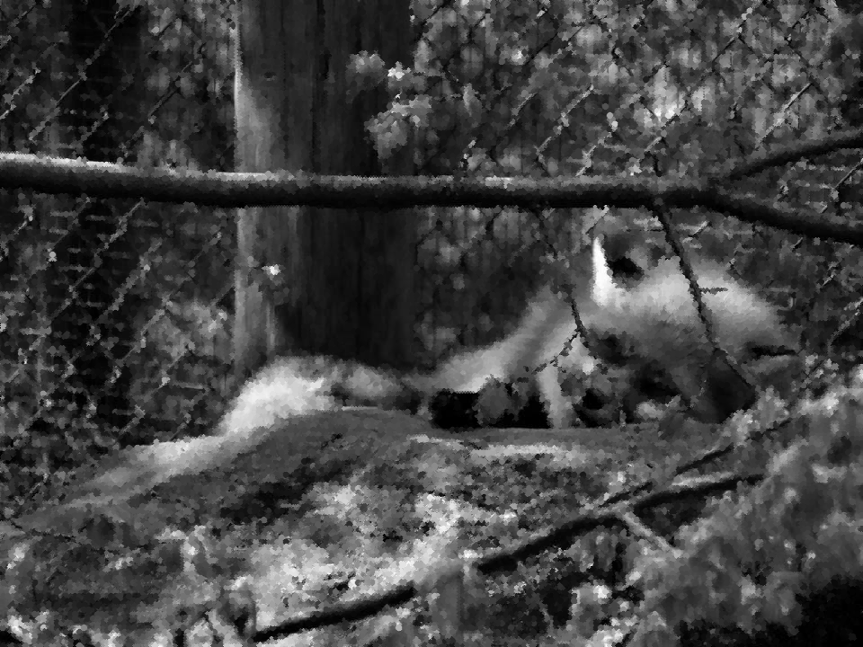

Professor: Agostinho Brito.
Essa página tem como objetivo explorar assuntos estudados em sala de aula através de exercícios propostos pelo professor. Ela foi construída por duas alunas da Universidade Federal do Rio Grande do Norte que estão cursando a disciplina de Processamento Digital de Imagens.
Para a realização dos exercícios propostos, utilizou-se a ferramenta OpenCV e o sistema operacional Ubuntu. Pelo prompt de comando, o OpenCV foi instalado e configurado. O material que foi utilizado como base teórica para a realização desses exercícios encontra-se na página do professor, Agostinho Brito .
Este exercício tem o propósito de ajudar no entendimento sobre manipulação de imagens, após um estudo teórico sobre componentes de uma imagem e maneiras de manipulá-la.
Para receber a imagem, fazer alterações nela, criar uma nova e exibí-la, será utilizado o conjunto de bibliotecas OpenCV.
O exercício consiste em, dado dois valores P1 e P2, transformar uma imagem de forma que a região presente entre P1 e P2 conterá o negativo da mesma e o resto se manterá. Para isso, P1 e P2 devem ser valores presentes no conjunto de pixels da imagem e o resultado da transformação se dará numa região com formato retangular.
A ideia para a execução desse exercício consistiu em seu princípio de fazer o upload de uma imagem em grayscale (tons de cinza) e ler os valores P1 e P2. Em seguida, deve-se criar uma região variando do ponto x do pixel P1 ao ponto x do pixel P2 e do ponto y de P1 ao ponto y de P2. Dentro dessa região, uma transformação será feita.
Para finalizar, deve-se gerar uma imagem nova e exibí-la.
As funções fundamentais para a execução dessa atividade e o que elas representam são:
Para a realização do exercício, foi utilizada a seguinte imagem como base:
using namespace cv;
using namespace std;
int main(int, char**){
Mat image;
image= imread("imagem.png",CV_LOAD_IMAGE_GRAYSCALE);
if(!image.data){
cout << "Erro: Nao foi possivel carregar a imagem." << endl;
}
else{
namedWindow("Janela",WINDOW_AUTOSIZE);
int x1, x2, y1, y2;
cout << "Ponto 1" << endl;
cout << "X: ";
cin >> x1;
cout << "Y: ";
cin >> y1;
cout << "Ponto 2" << endl;
cout << "X: ";
cin >> x2;
cout << "Y: ";
cin >> y2;
// Negativar regiao entre os pontos 1 e 2
for(int i=x1;i<x2;i++){
for(int j=y1;j<y2;j++){
image.at<uchar>(i,j)=255 - image.at<uchar>(i,j);
}
}
imshow("Janela", image);
imwrite("imagemnegativa.png", image);
waitKey();
}
return 0;
}
Apos a execução do codigo através dos comandos "make negativo" e "./negativo" no prompt de comando, o programa pede os valores de P1 e P2, sendo primeiro o "x" e depois o "y" de cada ponto. Como exemplo, utilizou-se P1= (100, 100) e P2= (400, 400). O resultado do programa pode ser visto a seguir:

Com este exercício, vê-se o resultado do aprendizado base com relação a manipulação de imagens. Para a realização dele, será necessário conceitos básicos de separaçáo de regiões e programação. Para a execução dessa proposta, ainda será utilizado o conjunto de bibliotecas OpenCV, de forma a receber a imagem, fazer alterações nela, criar uma nova e exibí-la.
O exercício consiste em, dado uma imagem, dividí-la em quatro regiões e trocar as posições delas. Por exemplo, a região superior esquerda deve trocar de lugar com a inferior direita e a região superior direita deve ser trocada com a inferior esquerda.
A ideia para o funcionamento desse exercício comecou com o upload de uma imagem escolhida previamente. Em seguida, para não gastar mais linhas, deve-se definir logo a imagem nova e definir o valor de seus pixels de acordo com as regiões da imagem original.
A separaração das regiões escolhidas se dará variando do ponto inicial a metade do comprimento da imagem e a metade de sua altura para a região superior esquerda.
A região superior esqueda (1) será definida dos valores iniciais de x e y até a metade da altura e a metade da largura da imagem, respectivamente. A região superior direita (2) será definida do ponto inicial até a metade da altura para os valores de x e da metade do comprimento até o final dele para os valores de y. A região inferior esquerda (3) será definida da metade da altura até o final dela para os valores de x e do ponto inicial até a metade do comprimento para os valores de y. Seguindo a mesma lógica, a última região (4) será composta pelo que sobrou.
Nota-se que apenas 3 resultados podem ser obtidos, tendo em vista que a região 1 pode trocar de lugar com qualquer uma das 3 outras, contudo as duas que restarem devem trocar de lugar entre si. Então, a troca pode ocorrer de três formas: entre as regiões 1-2 e 3-4 (troca na horizontal), entre as regiões 1-3 e 2-4 (troca na vertical) ou entre as regiões 1-4 e 2-3. A lógica dela consiste em armazenar os dados da primeira região numa variavel, depois modificar essa região com os dados da desejada e em seguida modificar os dados da desejada utilizando o que foi armazenado na variável. Para finalizar, deve-se exibir na tela a nova imagem.
As funções adicionais essenciais para a execução dessa atividade e o que elas representam são:
Para a realização desse exercício, foi utilizada a mesma imagem do exercício anterior como base. Ela está mostrada a seguir:
using namespace cv;
using namespace std;
int main(int, char**){
srand(time(NULL));
Mat image;
int width, height;
int t;// Troca (regioes)
int aux1, aux2; // Auxiliar
image= imread("imagem.png",CV_LOAD_IMAGE_GRAYSCALE);
if(!image.data){
cout << "Erro: Nao foi possivel carregar a imagem." << endl;
}
else{
namedWindow("Janela",WINDOW_AUTOSIZE);
width=image.size().width;
height=image.size().height;
// Translacao
t = rand() % 3; // Troca aleatoria
if(t==0){ // 1-2, 3-4
for(int i=0;i<height/2;i++){
for(int j=0;j<width/2;j++){
aux1 = image.at<uchar>(i,j);
image.at<uchar>(i,j) = image.at<uchar>(i,j + width/2);
image.at<uchar>(i,j + width/2) = aux1;
aux2 = image.at<uchar>(i + height/2,j);
image.at<uchar>(i + height/2,j) = image.at<uchar>(i + height/2,j + width/2);
image.at<uchar>(i + height/2,j + width/2) = aux2;
}
}
}
else if(t==1){ // 1-3, 2-4
for(int i=0;i<height/2;i++){
for(int j=0;j<width/2;j++){
aux1 = image.at<uchar>(i,j);
image.at<uchar>(i,j) = image.at<uchar>(i + height/2,j);
image.at<uchar>(i + height/2,j) = aux1;
aux2 = image.at<uchar>(i,j + width/2);
image.at<uchar>(i,j + width/2) = image.at<uchar>(i + height/2,j + width/2);
image.at<uchar>(i + height/2,j + width/2) = aux2;
}
}
}
else{ // 1-4, 2-3
for(int i=0;i<height/2;i++){
for(int j=0;j<width/2;j++){
aux1 = image.at<uchar>(i,j);
image.at<uchar>(i,j) = image.at<uchar>(i + height/2,j + width/2);
image.at<uchar>(i + height/2,j + width/2) = aux1;
aux2 = image.at<uchar>(i,j + width/2);
image.at<uchar>(i,j + width/2) = image.at<uchar>(i + height/2,j);
image.at<uchar>(i + height/2,j) = aux2;
}
}
}
// FimTranslacao
imshow("Janela", image);
imwrite("Exemplo2.png", image);
waitKey();
}
return 0;
}
Para obter resultados, o código correspondente, com o nome "trocaderegioes.cpp", foi executado pelo prompt de comando. Esse exercício foi executado diversas vezes, pois a troca de regiões está aleatória e assim foi possível verificar todas as possibilidades, que estão mostradas a seguir:

Troca 1-3, 2-4

Troca 1-4, 2-3

Tendo-se como exemplo o código a seguir, que rotula uma imagem binaria utilizando o algoritmo seedfill para descobrir aglomerados de pixels, ao analisá-lo, consegue-se verificar alguns possíveis problemas.
O principal dele é que o algoritmo de rotulação não consegue identificar mais de 255 objetos na imagem, porque ele trabalha com grayscale, que tem uma escala de tons de cinza que varia de 0 ate 255 e o algoritmo da diferentes rótulos.
Logo, se há mais de 255 objetos na imagem, não existirão cores diferentes para completar a contagem.
using namespace cv;
int main(int argc, char** argv){
Mat image, mask;
int width, height;
int nobjects;
CvPoint p;
image = imread(argv[1],CV_LOAD_IMAGE_GRAYSCALE);
if(!image.data){
std::cout << "imagem nao carregou corretamente\n";
return(-1);
}
width=image.size().width;
height=image.size().height;
p.x=0;
p.y=0;
// busca objetos com buracos presentes
nobjects=0;
for(int i=0; i<height; i++){
for(int j=0; j<width; j++){
if(image.at<uchar>(i,j) == 255){
// achou um objeto
nobjects++;
p.x=j;
p.y=i;
floodFill(image,p,nobjects);
}
}
}
imshow("image", image);
imwrite("labeling.png", image);
waitKey();
return 0;
}
Uma solução simples para o problema em questão desse código, seria criar uma nova variável para realizar a mesma contagem que o nobjects e que possa ser resetada se o valor máximo for atingido. Isso tudo sem comprometer a rotulação dos objetos desejados.
Esse Exercício propõe a modificação de um algoritmo de rotulação para separar regiões desejadas e dentro delas selecionar um subconjunto. Dessa forma, deve-se praticar a lógica e conceitos prévios de rotulação e de manipulação de pixels.
A ideia é, dada uma imagem de cor binária, com fundo preto e "bolhas" brancas espalhadas por ela, deve-se selecionar e contar as bolhas, separando-as entre as que possuem furo (em preto) e as que não.
O código para a execução desse exercício consiste em três passos principais. Inicialmente, deve-se retirar os elementos que tocam as bordas, já que podem haver buracos nessas bolhas que não são visíveis na imagem disponível. Para tanto, igualam-se todos os pixeis da borda a 255 e depois pinta-se esses mesmos pixels e os que os tocam de 0.
Em seguida, faz-se a rotulação dos objetos através do algoritmo seedfill já visto. E, por fim, percorre-se cada objeto em busca de um pixel (ou mais) com a cor do fundo, realizando assim a contagem de elementos com e sem buracos.
Esse código contou com dois extras explicitados nos comentários, onde os buracos podem ou não ficar visíveis na imagem final e pode-se destinguir as bolhas com apenas dois tons de cinza (um para com buracos e outro para sem) ou com a mesma variação de 0 a 255 do exercício anterior.
Adicionalmente, o código gera uma nova imagem, com nome "labeling".
As funções adicionais essenciais para a execução dessa atividade e o que elas representam são:
A imagem utilizada como base para esse exercício está mostrada a seguir:

using namespace cv;
int main(int argc, char** argv){
Mat image, mask;
int width, height;
int nobjects, cont;
CvPoint p;
image = imread("imagem2.png",CV_LOAD_IMAGE_GRAYSCALE);
if(!image.data){
std::cout << "Erro: Nao foi possivel carregar a imagem.\n";
return(-1);
}
width=image.size().width;
height=image.size().height;
p.x=0;
p.y=0;
nobjects=0;
cont = 0;
for(int i=0; i<height; i++){
for(int j=0; j<width; j++){
if(image.at<uchar>(i,j) == 255){ // Encontrou um objeto
nobjects++;
cont++;
p.x=j;
p.y=i;
floodFill(image,p,cont);
if(cont==254){ cont = 0;} // Estourou o limite do contador, zerar
}
}
}
std::cout << "Numero de objetos: " << nobjects << "\n"; // Total de objetos encontrados
imshow("image", image);
imwrite("labeling.png", image);
waitKey();
return 0;
}
Como resultado, pode-se ver que o código conseguiu diferenciar as bolhas e também fazer a variação de tons, se desejado.

Com bolhas
Com variacao de tons

Esse exercício tem como objetivo explorar o conhecimento sobre histogramas de uma imagem e a manipulação dele através do conjunto de bibliotecas OpenCV, além de utilizar captura de video. Para isso, a ideia é que, para cada imagem gerada, o programa .cpp equalize o histograma da imagem e mostre na tela.
Para o funcionamento desse código, são necessários três passos: capturar frames de video, realizar a equalização do histograma para cada imagem dessas e exibir as images após a modificação.
É importante saber que, para a manipulação do histograma, foi necessário inicialmente mudar o sistema de cores de RGB para YCrCb. Em seguida, o histograma pode ser calculado e normalizado.
Uma imagem para servir de prévia foi mostrada, utilizando um algoritmo que exibe a imagem captada pela camera e gera o histograma.

using namespace cv;
using namespace std;
int main(int argc, char** argv){
Mat rawimage, eqimage;
int width, height;
VideoCapture cap;
vector<Mat> planes;
Mat histR, histG, histB;
int nbins = 64;
float range[] = {0, 256};
const float *histrange = { range };
bool uniform = true;
bool acummulate = false;
cap.open(0);
if(!cap.isOpened()){
cout << "Erro: Cameras indisponiveis.";
return -1;
}
width = cap.get(CV_CAP_PROP_FRAME_WIDTH);
height = cap.get(CV_CAP_PROP_FRAME_HEIGHT);
cout << "Largura = " << width << endl;
cout << "Altura = " << height << endl;
int histw = nbins, histh = nbins/2;
Mat histImgR(histh, histw, CV_8UC3, Scalar(0,0,0));
Mat histImgG(histh, histw, CV_8UC3, Scalar(0,0,0));
Mat histImgB(histh, histw, CV_8UC3, Scalar(0,0,0));
while(1){
cap >> rawimage;
cvtColor(rawimage, eqimage, CV_BGR2YCrCb); // Muda a cor de RGB para YCrCb
for (int i=0; i<1; i++) {
split (eqimage, planes);
equalizeHist(planes[i], planes[i]);
merge(planes, eqimage);
}
cvtColor(eqimage, eqimage, CV_YCrCb2BGR);
calcHist(&planes[0], 1, 0, Mat(), histR, 1,
&nbins, &histrange,
uniform, acummulate);
calcHist(&planes[1], 1, 0, Mat(), histG, 1,
&nbins, &histrange,
uniform, acummulate);
calcHist(&planes[2], 1, 0, Mat(), histB, 1,
&nbins, &histrange,
uniform, acummulate);
normalize(histR, histR, 0, histImgR.rows, NORM_MINMAX, -1, Mat());
normalize(histG, histB, 0, histImgR.rows, NORM_MINMAX, -1, Mat());
normalize(histB, histB, 0, histImgR.rows, NORM_MINMAX, -1, Mat());
histImgR.setTo(Scalar(0));
histImgG.setTo(Scalar(0));
histImgB.setTo(Scalar(0));
for(int i=0; i<nbins; i++){
line(histImgR, Point(i, histh),
Point(i, cvRound(histR.at
Scalar(0, 0, 255), 1, 8, 0);
line(histImgG, Point(i, histh),
Point(i, cvRound(histG.at
Scalar(0, 255, 0), 1, 8, 0);
line(histImgB, Point(i, histh),
Point(i, cvRound(histB.at
Scalar(255, 0, 0), 1, 8, 0);
}
histImgR.copyTo(eqimage(Rect(0, 0 ,nbins, histh)));
histImgG.copyTo(eqimage(Rect(0, histh ,nbins, histh)));
histImgB.copyTo(eqimage(Rect(0, 2*histh ,nbins, histh)));
imshow("image", eqimage);
if(waitKey(30) >= 0) break;
}
return 0;
}
Como proposto, pode-se ver não apenas a diferença na imagem, mas também o que mudou nos histogramas.

Esse exercício envolve a utilização de filtros e video. Para isso, será criado um programa .cpp que receberá frames de video e, dependendo do que o usuário selecionar, aplicará um filtro espacial através do uso de máscaras. Nesse caso, estaremos também testando o filtro laplaciano do gaussiano.
Para a execução dessa proposta, os passos serão: a captura de imagens em fluxo, escolha do filtro, aplicação da máscara e criação de um novo fluxo de imagens. O programa feito cria mascaras 3x3 para os seguintes filtros: do módulo, da média, gaussiano, vertical, horizontal e laplaciano. Os filtros são ativados pelas teclas "a", "m", "g", "v", "h" e "l", respectivamente. Para ativar o laplaciano do gaussiano, foi necessário uma máscara 5x5 e o usuário deve teclar "x".
As principais funções para a realização desse exercício seguem:
void printmask(Mat &m){
for(int i=0; i<m.size().height; i++){
for(int j=0; j<m.size().width; j++){
cout << m.at<float>(i,j) << ",";
}
cout << endl;
}
}
void menu(){
cout << "\nPressione a tecla para ativar o filtro: \n"
"a - Calcular o modulo\n"
"m - Media\n"
"g - Gauss\n"
"v - Vertical\n"
"h - Horizontal\n"
"l - Laplaciano\n"
"x - Laplaciano do gaussiano\n"
"esc - Sair\n";
}
int main(int argvc, char** argv){
VideoCapture video;
float media[] = {1,1,1,
1,1,1,
1,1,1};
float gauss[] = {1,2,1,
2,4,2,
1,2,1};
float horizontal[]={-1,0,1,
-2,0,2,
-1,0,1};
float vertical[]={-1,-2,-1,
0,0,0,
1,2,1};
float laplacian[]={0,-1,0,
-1,4,-1,
0,-1,0};
float lap_gauss[]={0,0,1,0,0,
0,1,2,1,0,
1,2,-16,2,1,
0,1,2,1,0,
0,0,1,0,0};
Mat cap, frame, frame32f, frameFiltered;
Mat mask(3,3,CV_32F), mask1;
Mat result, result1;
double width, height, min, max;
int absolut;
char key;
video.open(0);
if(!video.isOpened())
return -1;
width=video.get(CV_CAP_PROP_FRAME_WIDTH);
height=video.get(CV_CAP_PROP_FRAME_HEIGHT);
std::cout << "Largura =" << width << "\n";;
std::cout << "Altura =" << height<< "\n";;
namedWindow("filtroespacial",1);
mask = Mat(3, 3, CV_32F, media);
scaleAdd(mask, 1/9.0, Mat::zeros(3,3,CV_32F), mask1);
swap(mask, mask1);
absolut=1; // calcs abs of the image
menu();
for(;;){
video >> cap;
cvtColor(cap, frame, CV_BGR2GRAY);
flip(frame, frame, 1);
imshow("original", frame);
frame.convertTo(frame32f, CV_32F);
filter2D(frame32f, frameFiltered, frame32f.depth(), mask, Point(1,1), 0);
if(absolut){
frameFiltered=abs(frameFiltered);
}
frameFiltered.convertTo(result, CV_8U);
imshow("filtroespacial", result);
key = (char) waitKey(10);
if( key == 27 ) break; // esc pressed!
switch(key){
case 'a':
menu();
absolut=!absolut;
break;
case 'm':
menu();
mask = Mat(3, 3, CV_32F, media);
scaleAdd(mask, 1/9.0, Mat::zeros(3,3,CV_32F), mask1);
mask = mask1;
printmask(mask);
break;
case 'g':
menu();
mask = Mat(3, 3, CV_32F, gauss);
scaleAdd(mask, 1/16.0, Mat::zeros(3,3,CV_32F), mask1);
mask = mask1;
printmask(mask);
break;
case 'h':
menu();
mask = Mat(3, 3, CV_32F, horizontal);
printmask(mask);
break;
case 'v':
menu();
mask = Mat(3, 3, CV_32F, vertical);
printmask(mask);
break;
case 'l':
menu();
mask = Mat(3, 3, CV_32F, laplacian);
printmask(mask);
break;
case 'x':
menu();
mask = Mat(5, 5, CV_32F, lap_gauss);
printmask(mask);
break;
default:
break;
}
}
return 0;
}
No fim, o programa mostra a imagem original e o filtro desejado. Para poder comparar o uso dos filtros, a seguir vem um exemplo do laplaciano do gaussiano e um com apenas o laplaciano:
Laplaciano:

Esse exercício tem como objetivo explorar o conhecimento sobre espectro de frequência, uso da transformada discreta de fourier (DFT) e filtragem, de modo a tratar as imagens de maneira mais eficiente. Isso além de incluir captura e tratamento de video.
A ideia proposta é implementar um filtro homomórfico de forma a melhorar a iluminação de uma cena grayscale.
A implementação do filtro homomórfico consiste em, primeiramente, separar as componentes de iluminação e reflectância, sendo que a multiplicação delas deve ser equivalente ao valor da função naquele ponto. A iluminação pode ser determinada pelas baixas frequências do espectro e a reflectância pelas altas frequências.
Depois, deve-se realizar a operação logaritmica sobre as componentes e em seguida fazer a transformada de Fourier. No domínio da frequência, o filtro deve ser implementado. A nova função retornará então o valor do espectro filtrado. Em seguida, as funções complementares devem ser realizadas: a transformada inversa de fourier e o exponencial da função. Por fim, o resultado será mostrado na tela.
As funções a seguir mostram os procedimentos novos e fundamentais para a execução desse exercício.
A imagem a seguir representa a original, para servir de prévia, utilizando um algoritmo que exibe a imagem captada pela camera instantaneamente.
#define RADIUS 10
#define euler 2.71828182
using namespace cv;
using namespace std;
// troca os quadrantes da imagem da DFT
void deslocaDFT(Mat& image ){
Mat tmp, A, B, C, D;
// se a imagem tiver tamanho impar, recorta a regiao para
// evitar cópias de tamanho desigual
image = image(Rect(0, 0, image.cols & -2, image.rows & -2));
int cx = image.cols/2;
int cy = image.rows/2;
// reorganiza os quadrantes da transformada
// A B -> D C
// C D B A
A = image(Rect(0, 0, cx, cy));
B = image(Rect(cx, 0, cx, cy));
C = image(Rect(0, cy, cx, cy));
D = image(Rect(cx, cy, cx, cy));
// A <-> D
A.copyTo(tmp); D.copyTo(A); tmp.copyTo(D);
// C <-> B
C.copyTo(tmp); B.copyTo(C); tmp.copyTo(B);
}
int main(int , char**){
float y_l, y_h;
float c = 1;
float D;
VideoCapture cap;
Mat imaginaryInput, complexImage, multsp, complexImage2;
Mat padded, filter, mag;
Mat image, imagegray, tmp;
Mat_<float> realInput, zeros;
vector<Mat> planos;
Mat img_final, img_log;
// habilita/desabilita ruido
int noise=0;
// frequencia do ruido
int freq=100;
// ganho inicial do ruido
float gain=1;
// valor do ruido
float mean;
// guarda tecla capturada
char key;
// valores ideais dos tamanhos da imagem
// para calculo da DFT
int dft_M, dft_N;
// abre a câmera default
cap.open(0);
if(!cap.isOpened())
return -1;
// captura uma imagem para recuperar as
// informacoes de gravação
cap >> image;
// identifica os tamanhos otimos para
// calculo do FFT
dft_M = getOptimalDFTSize(image.rows);
dft_N = getOptimalDFTSize(image.cols);
// realiza o padding da imagem
copyMakeBorder(image, padded, 0,
dft_M - image.rows, 0,
dft_N - image.cols,
BORDER_CONSTANT, Scalar::all(0));
// parte imaginaria da matriz complexa (preenchida com zeros)
zeros = Mat_<float>::zeros(padded.size());
// prepara a matriz complexa para ser preenchida
complexImage = Mat(padded.size(), CV_32FC2, Scalar(0));
// prepara a matriz complexa para ser preenchida
complexImage2 = Mat(padded.size(), CV_32FC2, Scalar(0));
// a função de transferência (filtro frequencial) deve ter o
// mesmo tamanho e tipo da matriz complexa
filter = complexImage.clone();
// cria uma matriz temporária para criar as componentes real
// e imaginaria do filtro ideal
tmp = Mat(dft_M, dft_N, CV_32F);
// prepara o filtro homomorfico
// cria a matriz com as componentes do filtro e junta
for(;;){
// realiza o padding da imagem
// limpa o array de matrizes que vao compor a
//soma 1
//log da imagem
// insere as duas componentes no array de matrizes
// combina o array de matrizes em uma unica
// calcula o dft
// realiza a troca de quadrantes
// aplica o filtro frequencial
// troca novamente os quadrantes
// calcula a DFT inversa
// limpa o array de planos
// separa as partes real e imaginaria da
// normaliza a parte real para exponencial
// normaliza a parte real para exibicao
key = (char) waitKey(10);
}
}
y_h = 1.5;
y_l = 0.5;
D = 0.7*dft_M/2;
for(int i=0; i<dft_M; i++){
for(int j=0; j<dft_N; j++){
tmp.at
}
}
// ambas em uma matriz multicanal complexa
Mat comps[] = {tmp, tmp};
merge(comps, 2, filter);
cap >> image;
cvtColor(image, imagegray, CV_BGR2GRAY);
imshow("original", imagegray);
copyMakeBorder(imagegray, padded, 0,
dft_M - image.rows, 0,
dft_N - image.cols,
BORDER_CONSTANT, Scalar::all(0));
// imagem complexa
planos.clear();
// cria a compoente real
realInput = Mat_<float>(padded);
for(int i=0; i<dft_M; i++){
for(int j=0; j<dft_N; j++){
realInput.at
}
}
log(realInput, img_log);
planos.push_back(img_log);
planos.push_back(zeros);
// componente complexa
merge(planos, complexImage);
dft(complexImage, complexImage);
deslocaDFT(complexImage);
mulSpectrums(complexImage,filter,complexImage,0);
deslocaDFT(complexImage);
idft(complexImage, complexImage);
planos.clear();
// imagem filtrada
split(complexImage, planos);
normalize(planos[0], planos[0], 0, 1, CV_MINMAX);
//exponencial para retomar a imagem
exp(planos[0], planos[0]);
normalize(planos[0], planos[0], 0, 1, CV_MINMAX);
imshow("filtrada", planos[0]);
if( key == 27 ) break; // esc pressed!
return 0;
Apontou-se a câmera para ambientes com iluminações variadas e o filtro conseguiu corrigir os defeitos propostos na imagem, sendo notável a diferença de brilho.
O exercício propõe o estudo de técnicas de detecção de bordas e pontilhismo, unindo-as. A ideia é fazer a implementação de um programa denominado cannypoints.cpp, o qual elabora uma pintura digital pontilhista a partir de uma imagem e usa as bordas geradas pelo algoritmo de Canny para aperfeiçoar a qualidade desta, principalmente para evitar espaços vazios.
A arte do pontilhismo trata de uma técnica de pintura impressionista tal que a disposição de pontos ou manchas (baseados nas leis complementares, onde estas são justapostas) originam uma mistura visual a cargo do observador, uma vez que não há linhas no desenho.
O algoritmo de Canny busca encontrar bordas nos máximos locais do gradiente de uma imagem, para tanto ele segue as seguintes etapas:
O código foi feito a partir da ideia de que para cada iteração devem ser calculada as bordas de uma imagem com algoritmo de Canny e gerada uma imagem pontilhista seguindo essas referências. As imagens são somadas e por fim geram uma saída com o resultado desejado.
As principais funções para a realização desse exercício seguem:
A imagem abaixo será usada como base para algoritmo, deve-se obter sua representação em pintura pontilhista na saida.
using namespace std;
using namespace cv;
#define JITTER 3
int init;
int it_max = 40;
int STEP;
float RAIO;
int value;
char TrackbarName[50];
Mat image, border;
int main(int argc, char**argv){
Mat frame, points;
int width, height, gray;
int x, y;
image= imread("imagem8.png",CV_LOAD_IMAGE_GRAYSCALE);
width=image.size().width;
height=image.size().height;
init = height/100;
//declara imagem final
points = image;
//fazer canny para diferentes valores
for (int i=1; i<it_max; i++) {
value = 2*i+init;
Canny(image, border, value, 3*value);
RAIO = 1+(it_max-i+10)/20;
STEP = RAIO+2;
//gera circulos
for(int i=RAIO; i<height; i=i+STEP){
for(int j=RAIO; j<width; j=j+STEP){
gray = image.at<uchar>(i,j);
if (border.at<uchar>(i,j) > 200) {
circle(points,
cv::Point(j,i),
RAIO,
CV_RGB(gray,gray,gray),
-1,
CV_AA);
}
}
}
}
imwrite("pontos.png", points);
imshow("pontos", points);
return 0;
}
Como proposto, a imagem obtida assemelha-se à original porém é composta apenas de manchas em formato circular que se justapõem. Alterando-se a imagem recebida para "lena.png", foi possível notar como o código funciona na famosa imagem da Lena. Os resultados podem ser vistos a seguir:
Para imagem usada de autoria 
Para imagem da Lena